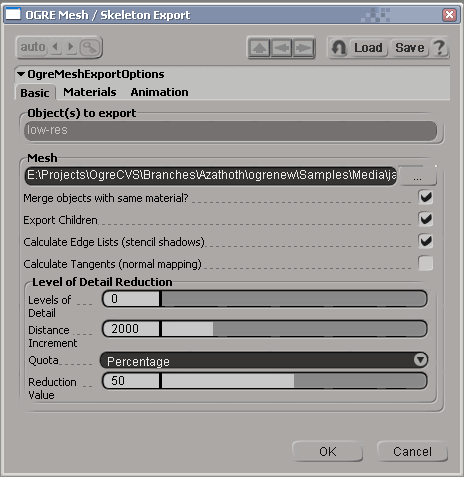
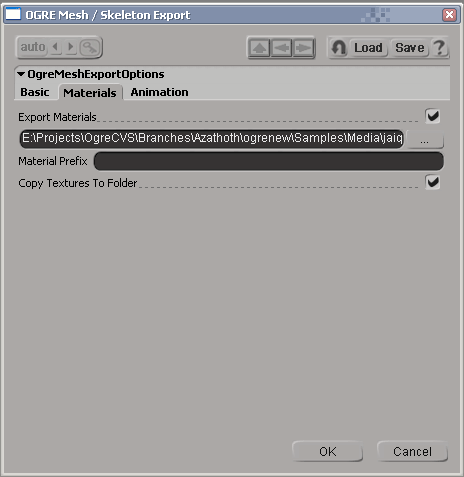
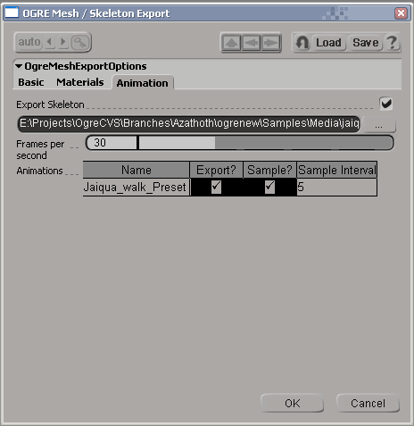

Summary
OGRE (Object-Oriented Graphics Rendering Engine) is a
scene-oriented, flexible 3D engine written in C++ designed to make it
easier and more intuitive for developers to produce games and demos
utilising 3D hardware. The class library abstracts all the details of
using the underlying system libraries like Direct3D and OpenGL and
provides an interface based on world objects and other intuitive
classes.
This distribution contains the files required to export OGRE
.mesh, .skeleton and .material files from SoftImage|XSI 4.2.
IMPORTANT: This exporter
only works with a full version
of XSI (Foundation or better). It will not work with the trial version.
How To Install
Features
How To Use
Tips
Change Log
How to Install
If you are using the installer, you don't need to do anything except
to run it and point it at your XSI folder. If you're installing from
source, you need to do the following:
- copy devil.dll, ilu.dll, ilut.dll and zlib1.dll into
$(XSI_ROOT)\Application\bin, or make sure they are somewhere on your
path
- copy OgreMain.dll (and OgreMain_d.dll if you wish to use the
debug version anytime) into $(XSI_ROOT)\Application\bin
- copy OgreXSIExporter.dll into $(XSI_ROOT)\Application\plugins
Back To Top
Features
The following features are supported:
- Exporting selected PolygonMesh objects direct to the OGRE binary
.mesh format
- Exports vertex position, normals, multiple UV sets and vertex
colours
- Polygon clusters used to change materials in a single PolygonMesh
are exported as separate SubMeshes
- By default, separate PolygonMesh objects which use the same
material are merged for efficiency
- Mesh vertices are index-organised for efficiency
- Exporting of up to 4 weighted bone assignments per vertex
- Generation of edge lists, tangent vectors, and LOD levels during
export (optional)
- Exporting of deformers (bone chains, nulls used as deformers)
direct to binary .skeleton format
- Exporting of one or more ActionSources directly as animations ,
or sampled (IK conversion)
- Exporting of RealTime shaders on materials (OpenGL and DirectX)
Back To Top
How To Use
It's a simple case of selecting the objects you wish to export, and
clicking File > Export > OGRE Mesh / Skeleton... to bring up the
OGRE export dialog.

The first page of the exporter is concerned with the basic mesh export
settings.
Object(s) to export: This
is pre-populated with your current selection
Mesh:
This is the .mesh file to export - you must complete this. Once
you have selected a file, by default the other file-related fields in
the exporter will be completed for you based on the same filename
pattern.
Merge
objects with the same material?: If this is checked, all
polygon mesh objects with the same material will be merged into one for
efficiency. Most of the time you want this; but if you want more
control over the splitting of your SubMesh objects, deselect it.
Calculate
Edge Lists: Select this if you want your mesh to support
stencil shadows. This increases the size of the resulting .mesh object.
Calculate
Tangents: Select this if you wish to use normal mapping
or some other technique which requires tangents vectors.
Levels
of Detail: Increase this value above 0 if you want lower
LODs to be generated for this mesh. The rest of the parameters control
how the mesh is reduced.

Export
Materials: Whether to export a .material script or not.
The field underneath contains the name of the script to export, and is
pre-populated based on the .mesh selection on the first page.
Material
Prefix: Optional prefix to give the name of each
material.
Copy
Textures To Folder: If selected, any textures referenced
in your materials will be copied into the same folder as the .material
script.

Export
Skeleton: If checked, skeleton and animation will be
exported. Cannot be selected if no skeleton is referenced by this mesh.
The field underneath determines the target.skeleton file (pre-populated
based on the mesh name).
Frames
per second: How to translate XSI frames into time
values. Will be populated based on XSI's playback speed, but you can
alter it if you wish.
Animations:
This is a list of Actions which you've already saved. The fields
are as follows:
Name: The name of the
Action, which will become the name of the animation
Export?:
Whether to export this animation (checked by default)
Sample?:
Animation which is based on Inverse Kinematics (IK) or other
constraints needs to be 'sampled' to turn it into Forward Kinematics
(FK) in OGRE. If your animation includes IK or other constraints you must leave this option enabled. Only
if you are certain your Action is comprised entirely of FK, with no
other constraints in force, should you disable this option. If in
doubt, leave it enabled.
Sample
Interval: The number of frames between each sample, if
sampling is enabled.
Back To Top
Tips
Important modelling / animating considerations:
- The exporter writes one SubMesh per material if 'Merge objects
with the same material' is selected. If unselected, you get one SubMesh
per PolygonMesh (or clusters with differing materials within them)
- The exporter writes all your export settings into a custom
property in your scene, meaning that all your preferences are
remembered for this scene, even between loads.
- The exporter only exports PolygonMesh objects, so if you work
with higher-order surfaces like NURBS you must create a PolygonMesh
object from these surfaces before exporting
- The exporter writes a single .mesh at a time and combines all the
objects selected (and their children, if you select that option)
- All global modelling coordinates are preserved, so the origin of
your resulting .mesh will be where the world origin is in XSI
- Animations must be stored in ActionSource instances (Animate >
Actions > Store) to be exported. Any work-in-progress animation will
not be picked up
- You can make your animations smaller by turning them into FK
beforehand, and thus avoid fixed-rate sampling. This is somewhat tricky
to do properly, and you can't typically have IK and FK actions
functioning on the same model. If you're not sure, keep the 'Sample?'
option checked for your animations, since it's the simplest way to make
sure the animations look right in OGRE.
Important material considerations:
- The defaults that XSI gives to some real time material components
are not normally what you'd want (and not the OGRE default). For
example:
- OGLDraw and DXDraw objects have a default culling mode of
'None', meaning all materials are double-sided by default, you will
probably want to change that for efficiency
- OGLTexture and DXTexture both default to no mip mapping. You
will probably want to alter the defaults so that you have at least
sampled point mipmapping (in DXTexture this is a separate setting, in
OGLTexture it's combined with the minification filter)
Back To Top
Change Log
1.0.1c
- Added material exporting
- Added animation sampling (handle IK, other constraints seamlessly)
- Fixed vertex output format for software skinning
- Fixed a problem with translation keyframes
- Added optimisation of resulting animations (eliminate identity
tracks, collapse identical keyframes)
- Fixed frame -> time conversion with varying Action bases
- Reorganised GUI a little
- Deal with case-insensitive fcurve references
- Linux build fixes
Back To Top
Reporting Issues
Please report any issues with the exporter in the OGRE Forums.
Back To Top